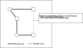
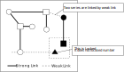
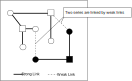

(multi) Coloring
Coloringは、着目数字を強いリンクでつなぐ解析アルゴリズムです。ここでは4タイプの(Multi)Coloringを示します。最初に実例を示します。
(1)Coloring Trap
着目数字を選択し、この数字の強いリンクで結ばれたセル群（これを"連"と名つけます）を交互に2つのグループに分けます。
次のイメージ図は、行・列・ブロックの強いリンクで結ばれたセル群をと□の2つのグループに分類しています。
グループに分ける操作を"セルに色をつけて塗り分ける"ことになぞらえて、Coloringと呼びます。リンク数は3以上、セル数は4以上が条件です。
この状態で、どちらかは決まっていませんが、一方のグループの全てのセルは着目数字であり、他方は着目数字ではありません。
このとき両方のグループ（と□）と同時に関係する(弱いリンクで繋がる）位置にあるセル（▲）は着目数字を候補に持つことはできません。
セル群はセル▲に対しLockedとなっています。左上の実例では、2つのグループを緑色の濃淡で表示しています。
Coloring Trap #4
group 1 : r4c5 r5c2 r7c6
group 2 : r5c6 r7c2 r8c5
exclude : r48c2#4
4....9.5.23..58.67...4.7.........3253.2....8.5.1...7.....89....9......7..1.72..46
(2)Coloring Wrap
着目数字を選択し、この数字の強いリンクで結ばれたセルセル群を交互に2つのグループに分けます。
これは(1)Trapと同じです。
このとき、一方のグループの複数のセルが同じHouseに属するとき、このグループの全セルの候補数字から着目数字を除外でき、
他方のセル群は着目数字に確定します。
なお、イメージ図は説明のために単純化していますが、強いリンクの繋がりは右上図のように複雑に連結していることもあります。
複雑に連結するのは、Trapでも同じように見られます。

Coloring Wrap #8
group 1 : r3c5 r8c4
group 2 : r2c4 r38c9 r7c5
exclude : r2c4#8 r38c9#8 r7c5#8
..9..154..5..9.....6.5..92.8..3..1.41..4.6..95.4..8..2.42..9.6.....6..1..187..2..
(3)MultiColoring Type1
Multi Colors Type1は、Trapの拡張です。着目数字を選択し、この数字の強いリンクで結ばれたセル群（連）を交互に2つのグループに分けます(塗り分けます)。
このColoringは途中で途切れることがあり、その場合は新しいセル群(連)として生成を繰り返します。
複数の連が生成できて、異なる連のセルが同じhouseに属している箇所を探します。この箇所は弱いリンク結ばれてるとします。
弱いリンクで接続する箇所の2つのセルは同時に着目数字になることはありません。
この状態で、弱いリンクで接続するセルとは反対の色を持つセル(それぞれの連にある)と同時に関係する(houseが同じ)位置にあるセル▲は着目数字を候補に持つことはできません。

MultiColoring Type1 #7
group 1-A: r1c5#7 r4c6#7
group 1-B: r4c8#7 r5c5#7
group 2-A: r5c3#7 r6c8#7 r8c2#7
group 2-B: r6c2#7 r7c1#7 r8c9#7
exclude : r1c19#7
..9..154..5..9.....6.5..92.8..3..1.41..4.6..95.4..8..2.42..9.6.....6..1..187..2..
(4)MultiColoring Type2
Multi Colors Type2も、Trapの別のタイプの拡張です。Coloringの方法はType1と同じです。
一方の連の同じ色のセル()が、他の連の両方の色のセル(□と)と弱いリンクで繋がっているとき、
全てのセルから着目数字は除外できて、全てのセル■は着目数字に確定します。

MultiColoring Type2 #7
group 1-A: r1c9#7
group 1-B: r6c9#7
group 2-A: r3c6#7 r4c2#7 r5c5#7
group 2-B: r1c5#7 r3c3#7 r4c6#7 r5c7#7
exclude : r1c5#7 r3c3#7 r4c6#7 r5c7#7
...6.8...6...9...529.....483.1...4.64..3.1..2...8.6....1.4.2.7..6.7.9.5.....8....
(multi)Coloringの解析プログラム
(0)Coloring関数
最初にColoringを行う関数を示します。このルーティンを呼ぶ前に、強いリンクは生成されているものとします。 この関数は列挙型で、指定した着目数字のColoring結果を、呼び出しごとに返します。 内部処理は、ビットパターンによる処理済み管理と、queueを用いる波及的処理です。 着目セルのグループと反対グループにリンク他端を設定して、セルを2つのグループに分けます。 1組のグループ分けができたら戻ります。波及的処理は、別のアルゴリズムでも用います。 Coloringが求まれば、前述の条件を検索するだけの簡単な処理で、coloringアルゴリズムのプログラムが構成できます。
public partial class CellLinkGen: AnalyzerBaseV2{
private IEnumerable<Bit81[]> _Coloring( int no ){
Bit81[] CRL=new Bit81[2];
CRL[0]=new Bit81(); CRL[1]=new Bit81();
Bit81 TBD = new Bit81(pBDL,(1<<no));
int rc1=TBD.FindFirstrc();
while( rc1>=0 ){
Queue<int> rcQue=new Queue<int>();
rcQue.Enqueue(rc1<<1);
CRL[0].BPSet(rc1);
TBD.BPReset(rc1);
while(rcQue.Count>0){
rc1 = rcQue.Dequeue();
int kx=1-(rc1&1);
rc1 >>= 1;
TBD.BPReset(rc1);
foreach( var P in CeLKMan.IEGetRcNoType(rc1,no,1) ){
int rc2=P.rc2;
if( !(CRL[0]|CRL[1]).IsHit(rc2) && TBD.IsHit(rc2) ){
CRL[kx].BPSet(rc2); rcQue.Enqueue((rc2<<1)|kx);
}
}
}
yield return CRL;
if( (rc1=TBD.FindFirstrc()) < 0 ) yield break;
CRL=new Bit81[2];
CRL[0]=new Bit81(); CRL[1]=new Bit81();
}
yield break;
}
}
(1)Colorint Trap
Coloringが成功したら、2つのグループのセルと同時に関係するセルを探します。
public partial class CellLinkGen: AnalyzerBaseV2{
public bool Color_Trap( ){
CeLKMan.PrepareCellLink(1); //strongLink生成
for( int no=0; no<9; no++ ){
int noB=(1<<no);
foreach( Bit81[] CRL in _Coloring(no) ){
Bit81 HitB=new Bit81();
Bit81 ELM = (new Bit81(pBDL,noB))-(CRL[0]|CRL[1]);
foreach( var rc in ELM.IEGet_rc() ){
Bit81 HB = HouseCells[18+rc.ToBlock()];
if( ((ConnectedCells[rc]-HB)&CRL[0]).IsZero() ) continue;
if( ((ConnectedCells[rc]-HB)&CRL[1]).IsZero() ) continue;
HitB.BPSet(rc);
}
if( !HitB.IsZero() ){
Color Cr = _ColorsLst[0];
Color Cr1 = Color.FromArgb( 120, Cr.R, Cr.G, Cr.B );
foreach( var P in HitB.IEGet_rc().Select(p=>pBDL[p]) ) P.CancelB=noB;
foreach( var P in CRL[0].IEGet_rc().Select(p=>pBDL[p]) ) P.SetNoBBgColor(noB,AttCr,Cr);
foreach( var P in CRL[1].IEGet_rc().Select(p=>pBDL[p]) ) P.SetNoBBgColor(noB,AttCr,Cr1);
SolCode = 2;
string SolMsg="Coloring Trap #"+(no+1);
Result=SolMsg;
if( SolInfoDsp ) ResultLong=SolMsg;
if( !AnMan.SnapSaveGP(true) ) return true;
HitB=new Bit81();
}
}
}
return false;
}
}
(2)Colorint wrap
Coloringが成功したら、1つのグループのセルを複数含むHouseを探します。
public partial class CellLinkGen: AnalyzerBaseV2{
public bool Color_Wrap( ){
CeLKMan.PrepareCellLink(1); //strongLink生成
for( int no=0; no<9; no++ ){
int noB=(1<<no);
foreach( Bit81[] CRL in _Coloring(no) ){
Bit81 BD0 = new Bit81(pBDL,noB);
Bit81 ELM = BD0-(CRL[0]|CRL[1]);
if( ELM.Count==0 ) continue;
for( int k=0; k<2; k++ ){
for( int dr=0; dr<27; dr++ ){
if( (CRL[k]&HouseCells[dr]).Count<2 ) continue;
Color CrA = _ColorsLst[1];
Color Cr = _ColorsLst[0];
Color Cr1 = Cr;
Color Cr2 = Color.FromArgb( 120, Cr.R, Cr.G, Cr.B );
foreach( var P in ELM.IEGet_rc().Select(p=>pBDL[p]) ) P.SetNoBBgColor(noB,AttCr,CrA);
foreach( var P in CRL[1-k].IEGet_rc().Select(p=>pBDL[p]) ) P.SetNoBBgColor(noB,AttCr,Cr1);
foreach( var P in CRL[k].IEGet_rc().Select(p=>pBDL[p]) ){ P.SetCellBgColor(Cr2); P.CancelB=noB; }
SolCode = 2;
string SolMsg="Coloring Wrap #"+(no+1);
Result=SolMsg;
if( SolInfoDsp ) ResultLong=SolMsg;
if( !AnMan.SnapSaveGP(true) ) return true;
}
}
}
}
return false;
}
}
(3)MultiColorint type1
Multi Coloringの場合には、最初にその盤面で可能なグループ分けをすべて求めます([06])。 その中から2つの連(グループ分け)を順列で選びます。これらの2つの連に対し、条件を満たすセル探します。 このあたりのことは文章で示すよりもイメージ図と対応させて、コードを読むのがよいでしょう。
public partial class CellLinkGen: AnalyzerBaseV2{
public bool MultiColor_Type1( ){
CeLKMan.PrepareCellLink(1); //strongLink生成
for( int no=0; no<9; no++ ){
int noB=(1<<no);
List<Bit81[]> MCRL = _Coloring(no).ToList();
if( MCRL==null || MCRL.Count<2 ) continue;
var cmb=new Combination(MCRL.Count,2);
while( cmb.Successor() ){
Bit81[] CRLa = MCRL[cmb.Cmb[0]];
Bit81[] CRLb = MCRL[cmb.Cmb[1]];
for( int na=0; na<2; na++ ){
Bit81 HCRLa = new Bit81();
foreach( var rc in CRLa[na].IEGet_rc() ) HCRLa |= ConnectedCells[rc];
for( int nb=0; nb<2; nb++ ){
if( (HCRLa&CRLb[nb]).IsZero() ) continue;
Bit81 BD0=new Bit81(pBDL,noB);
Bit81 ELMtry = BD0-(CRLa[na]|CRLb[nb]|CRLa[1-na]|CRLb[1-nb]);
if( ELMtry.Count==0 ) continue;
bool solF=false;
Bit81 ELM=new Bit81();
foreach( var rc in ELMtry.IEGet_rc() ){
if( !ConnectedCells[rc].IsHit(CRLa[1-na]) ) continue;
if( !ConnectedCells[rc].IsHit(CRLb[1-nb]) ) continue;
pBDL[rc].CancelB=noB; ELM.BPSet(rc); solF=true;
}
if(solF){
Color CrA = _ColorsLst[0];
foreach( var P in ELM.IEGet_rc().Select(p=>pBDL[p]) ) P.SetNoBBgColor(noB,AttCr,CrA);
for( int k=0; k<2; k++ ){
Bit81[] CRLX = MCRL[cmb.Cmb[k]];
Color Cr = _ColorsLst[k];
Color Cr1 = Cr;
Color Cr2 = Color.FromArgb( 120, Cr.R, Cr.G, Cr.B );
foreach( var P in CRLX[1-k].IEGet_rc().Select(p=>pBDL[p]) ) P.SetNoBBgColor(noB,AttCr,Cr1);
foreach( var P in CRLX[k].IEGet_rc().Select(p=>pBDL[p]) ) P.SetNoBBgColor(noB,AttCr,Cr2);
}
SolCode = 2;
string SolMsg="MultiColoring Type1 #"+(no+1);
Result=SolMsg;
if( SolInfoDsp ) ResultLong=SolMsg;
if( !AnMan.SnapSaveGP(true) ) return true;
solF=false;
}
}
}
}
}
return false;
}
}
(4)MultiColorint type2
public partial class CellLinkGen: AnalyzerBaseV2{
public bool MultiColor_Type2( ){
CeLKMan.PrepareCellLink(1); //strongLink生成
for( int no=0; no<9; no++ ){
int noB=(1<<no);
List<Bit81[]> MCRL = _Coloring(no).ToList();
if( MCRL==null || MCRL.Count<2 ) continue;
var prm=new Permutation(MCRL.Count,2);
while( prm.Successor() ){
if( prm.Pnum[0]<prm.Pnum[1] ) continue;
Bit81[] CRLa = MCRL[prm.Pnum[0]];
Bit81[] CRLb = MCRL[prm.Pnum[1]];
if( CRLa[0].IsZero() || CRLa[1].IsZero() ) continue;
if( CRLb[0].IsZero() || CRLb[1].IsZero() ) continue;
Bit81 HCRL0=new Bit81(), HCRL1=new Bit81();
foreach( var rc in CRLa[0].IEGet_rc() ) HCRL0 |= ConnectedCells[rc];
foreach( var rc in CRLa[1].IEGet_rc() ) HCRL1 |= ConnectedCells[rc];
for( int nb=0; nb<2; nb++ ){
if( (CRLb[nb]&HCRL0).IsZero() ) continue;
if( (CRLb[nb]&HCRL1).IsZero() ) continue;
Color Cr1 = _ColorsLst[0];
Color Cr2 = Color.FromArgb( 100, Cr1.R, Cr1.G, Cr1.B );
foreach( var P in CRLa[0].IEGet_rc().Select(p=>pBDL[p]) ) P.SetNoBBgColor(noB,AttCr,Cr1);
foreach( var P in CRLa[1].IEGet_rc().Select(p=>pBDL[p]) ) P.SetNoBBgColor(noB,AttCr,Cr2);
Cr1 = _ColorsLst[1];
Cr2 = Color.FromArgb( 100, Cr1.R, Cr1.G, Cr1.B );
foreach( var P in CRLb[1-nb].IEGet_rc().Select(p=>pBDL[p]) ) P.SetNoBBgColor(noB,AttCr,Cr2);
foreach( var P in CRLb[nb].IEGet_rc().Select(p=>pBDL[p]) ){ P.SetCellBgColor(Cr1); P.CancelB=noB; }
SolCode = 2;
string SolMsg="MultiColoring Type2 #"+(no+1);
Result=SolMsg;
if( SolInfoDsp ) ResultLong=SolMsg;
if( !AnMan.SnapSaveGP(true) ) return true;
}
}
}
return false;
}
}